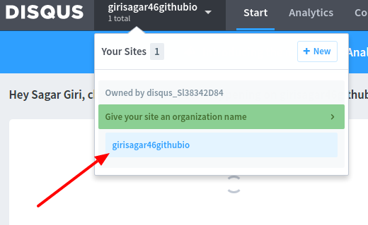
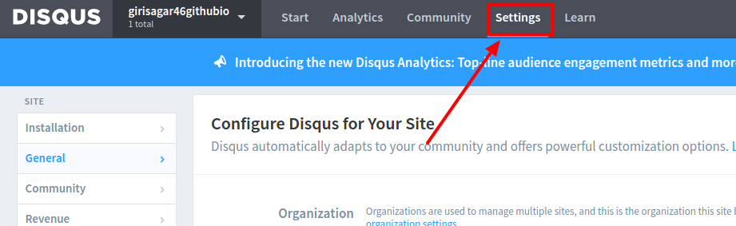
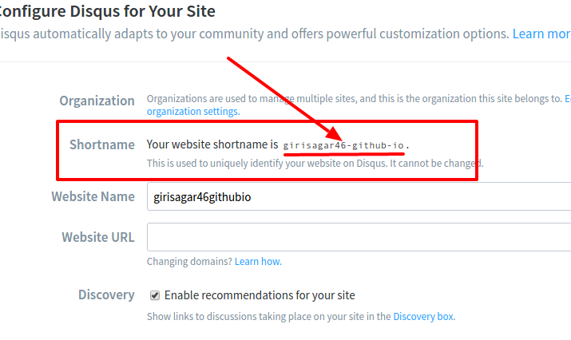
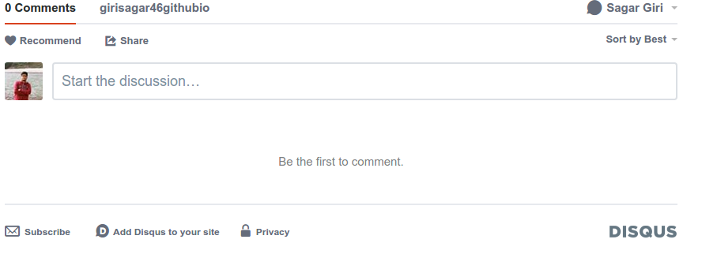

Integrating Disqus Comment Section In Pelican Blog
Posted on January 30, 2017 in tutorial • 1 min read
After you write a blog post, you expect people to comment in your post. Commenting is necessary because it can increase reader engagement and help build relationship among author and reader.
Many Pelican themes support Disqus commenting natively. All you need to have is a Disqus account. Go to disqus.com and quickly create an account for yourself.
Now, lets integrate Disqus to our each and every blog posts.
Steps
- While logged in to your Disqus account, head over to admin create panel.
- You'll see a form. Fill up that form
- Click Create Site button.
- Now on the top left side of the page, you'll see your disqus site. Click on the link. [refer picture below]

- Now headover to setting menu. [refer picture below]

- In the setting page, you'll see the Shortname of youtr site as shown below.

-
Copy that shortname
-
Now open your
pelicanconf.pyfile. On that file, add the following lines:
DISQUS_SITENAME = 'your-site-name'
-
Reserve your page via
$ fab reserve -
Browse the page and you'll see Disqus has been integrated to your blog post.

If you're confused, see how I configured Disqus comments in my blog from here